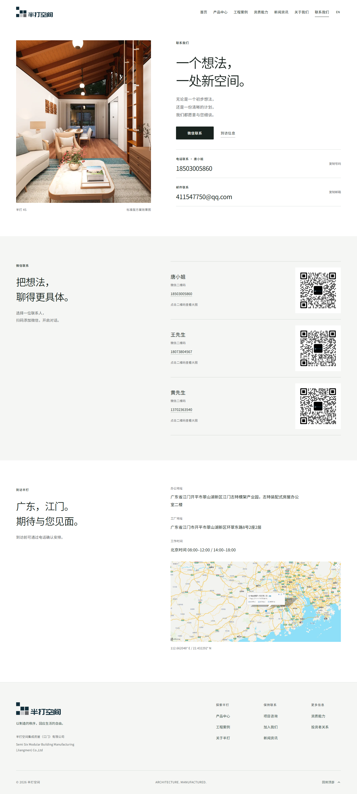

r33 联系信息可见性验收
三位联系人、二维码及位置图直接展示。本轮专项检查通过。
- 三位联系人姓名、电话、微信二维码全部直接展示，移除折叠入口
- 位置图直接显示于地址及工作时间下方
- 保留首屏空间图片、字体、按钮和既有联系方式；二维码及地图仍可放大，关闭后恢复焦点
- 联系人采用紧凑的左文右图排版，减少重复说明
本轮实测
本地与公网各18项视口检查、各4组自动无障碍检查通过。复制、咨询参数、二维码及地图阅图交互通过。33个公网HTML与本地一致。构建、代码和资源核对通过；类型检查0错误、0警告，保留6项既有提示。

范围与限制
- 本轮为联系页可见性调整，未重跑历史单元测试及全站完整视觉、轮播、视频回归；历史结果不计入本轮
- 本轮视口为中英文320/375/768/1024/1440/1920/2560px、844×390横屏和800×450缩放等效视口
- 使用Windows Edge/Chromium；未覆盖实机Safari/iOS/Android；自动无障碍检查不等于完整认证
- 未实际拨打电话、发送邮件或添加微信；表单发送服务仍未接入
- 保留上一临时站版本用于回退；仅本地提交，未推送GitHub
构建提交：a6210c9 · 详细记录